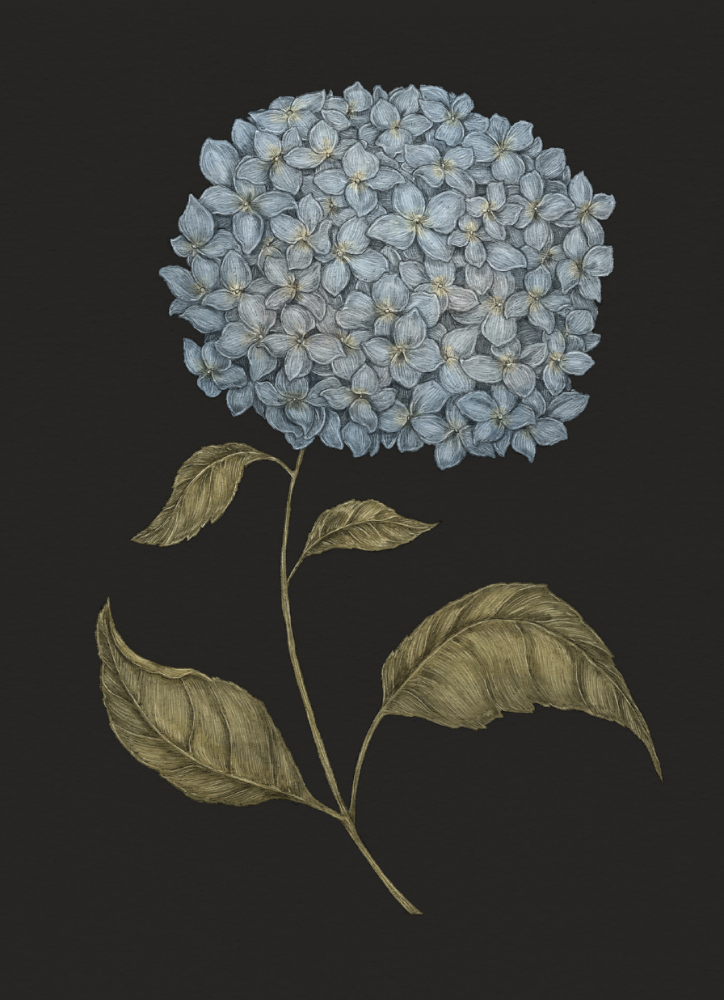

The Language of Flowers
Hydrangea

Hydrangea
Hydrangea
Meaning
- Boastfulness
- Heartlessness
Origin
The hydrangea's negative association with boastfulness and heartlessness comes from its bountiful and
round blooms. Large and abundant, the magnificent flowers only produce a few seeds, supporting the
notion that they are all show and little substance.
Pair With
- Tansy and Petunia to indicate your displeasure at a recent turn of events
- Fern to reassure a friend that you will keep their secret indiscretion to yourself